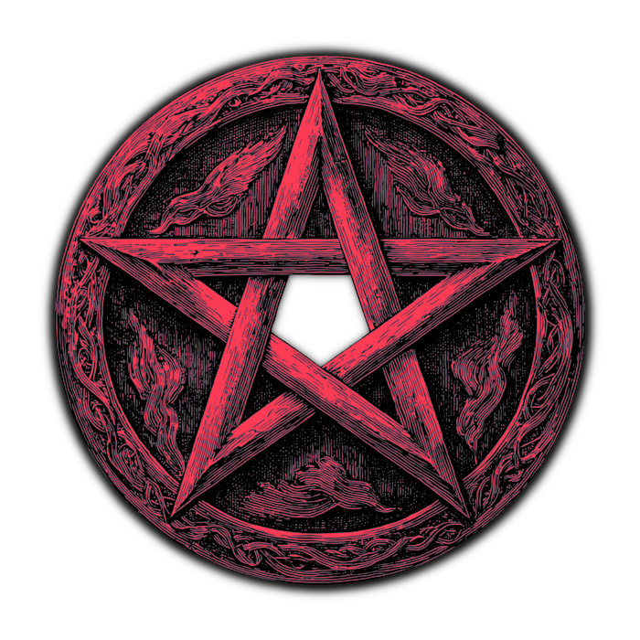

KIND · RUN · PARITY — each ring on the sieve is one conduit
ALTAR0/5
the altar is bare
DICE POOL0
BOONS0
no trial has yielded yet
GRIMOIRE
THE RECORD
THE VEIL
What you hear, and how thickly the dark gathers.
SOUND
Click a speaker to silence that voice. Click a number to type one.
SIGHT
Detail also governs how thickly the miasma gathers.
Type is yours to choose — the ritual titles keep their own hand.
HIGH
—
DEFAULT
px
THE LONG MEMORY
The Archive remembers every rite you have ever run — your Marrow, your
unlocked bones, chalks and relics, and how deep you have ever gone.
Scouring it puts you back where a stranger starts.
silence
0
×
1.0
=
0
GRIMOIRE
CONDUITS
RELICS
BONES
TRIALS
The bones wait in the cup.
QUOTA SATED
the sieve drinks deep and lets you pass
DESCENT
2
A TRIAL IS SET
TRIAL

THE BONE SIEVE
AN OCCULT WAGER
six knuckles of a dead saint · a grid of hungry stone · feed it
THE RITE: Cast your dice onto the sieve. Touching dice form
conduits when they share blood:
• KIND — matching values (×3)
• RUN — three-plus consecutive values (×4)
• PARITY — all odd or all even (×1.5)
Conduit blood is summed, then multiplied by your
Offering Multiplier — raising it is how you survive the deep.
Click landed dice to mark them, then re-roll.
Seal Fate to bank the blood. You have 3 casts to meet the Soul Quota.
Between levels, spend Soul Shards at the Ossuary on cursed dice,
altar chalks and relics.
Your altar holds only five relics, and your cup only so many bones. When
either is full the Ossuary offers an Exchange — pay the price and name what
you leave behind. That choice is your build.
Every fifth descent is a Trial — a cruel rule and a swollen
quota. Break one and the sieve grants a Boon; past level ten it also
carves a permanent Decree into the rite.
SPACE cast / seal · R re-roll marked ·
A re-roll all · G grimoire
THE ARCHIVE
What the deep has already been paid for, and what it still wants.
PAY THE ARCHIVE
What is bought here is bought for good.
SCOUR THE ARCHIVE
The deep forgets you. Everything it owed you goes with it.
THIS CANNOT BE UNDONE
THE OSSUARY
The merchant has no eyes, yet it counts your shards perfectly.
0SHARDS
select a ware to inspect it
A TRADE IN KIND
The merchant keeps no debts. Something of yours stays behind.
YOU TAKE
YOU GIVE UP
choose what to leave on the counter
THE CUP IS NARROWED
GIVE UP A BONE
choose a bone to give up
THE SIEVE YIELDS
THE TRIAL IS BROKEN
The sieve respects what it cannot swallow. Take your due.
choose one boon — the others are lost
THE RITE IS ENDED
THE SIEVE FEEDS
Your marrow joins the mortar. Another gambler will find your dice.